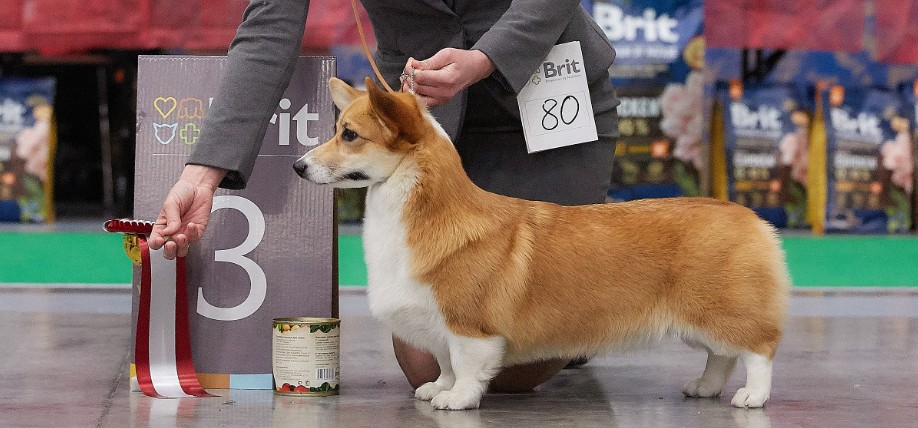

Описание
Вельш-корги — это небольшая собака ростом около тридцати сантиметров и массой тела до четырнадцати килограммов. Существуют два основных вида вельш-корги — пемброк и кардиган, которые довольно серьёзно различаются между собой. Так, например, пемброк немного меньше, также у этих видов разная форма головы и строение грудных конечностей.

У кардигана лапы чуть длиннее, их отличает специфический постав передних конечностей, повторяющий форму грудной клетки, что делает их более маневренными в работе со скотом. Широкогрудые, с головой благородных очертаний и прямой, прочной спиной. Они олицетворяют силу и благородство, мощь и работоспособность.
У пемброков рыже-белого окраса яркая, золотого окраса шерсть, белые отметины на морде, груди и лапах. Также пемброки бывают окраса чёрный триколор. Морда больше похожа на лисью. Из-за контрастной обводки пасти многим кажется, что пемброки «улыбаются». Глаза карие. Красивый крепкий корпус, крепкие короткие лапы с хорошо выраженными углами.
Считается, что пемброки отличаются от кардиганов отсутствием хвоста, однако это ошибка. Пемброки не всегда рождаются куцехвостыми, иногда хвосты купируют. С конца 1980-х годов, когда некоторые страны ввели запреты на купирование, всё больше появляется хвостатых пемброков, что делает их более похожими на лис. (Естественно, что перестав купировать хвосты, многие заводчики обнаружили большое разнообразие пемброков по качеству хвостов, потому что раньше это никак не отслеживалось).
Подшёрсток у них короткий, стойкий к намоканию, шерсть примерно такой же длины, как у овчарки, на ощупь шелковистая и имеет великолепный блеск. Окрас таких собак может быть рыже-белым, трёхцветным (чёрный, белый плюс рыжевато-коричневый), чёрным (редко), оленьим; у кардиганов распространён тигровый окрас. На цвет их шерсти есть строго установленные правила, не бывает лишь белых вельш-корги.
В последние годы, из-за роста популярности породы, увеличилось количество коммерческих вязок и недобросовестных заводчиков, что привело к снижению качества поголовья. Также наблюдается тенденция к увеличению размера и веса, особенно среди кобелей. У таких собак из-за увеличения массивности грудной клетки и головы при неизменно коротких лапах, снижается подвижность, ухудшается продуктивность движений, снижаются рабочие качества, а также могут возникать проблемы со здоровьем.